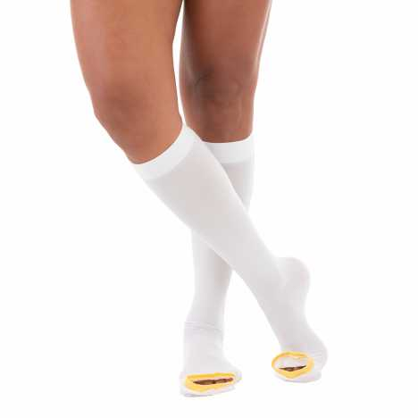

Mobilidade
Como escolher a cadeira de rodas ideal
Um guia completo com dicas para encontrar o modelo perfeito considerando peso, terreno, tipo de uso e necessidades específicas.
Ler maisDicas, orientações e informações para cuidar melhor da sua saúde e bem-estar.
Confira materiais preparados para ajudar na escolha e no uso de produtos ortopédicos, hospitalares e de recuperação.
Um guia completo com dicas para encontrar o modelo perfeito considerando peso, terreno, tipo de uso e necessidades específicas.
Ler mais
Orientações importantes para uma recuperação segura após cirurgias ortopédicas, incluindo repouso, fisioterapia e uso de acessórios.
Ler mais
Entenda como as meias de compressão ajudam na circulação sanguínea, prevenção de varizes e bem-estar nas pernas.
Ler mais